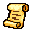
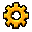

The adventure awaits
Choose your path


A little courage. A little luck. One more depth.
Left thumb to move. Tap the sword to attack; hold it, then let go, to spin.Use the boot to dash and the hand to interact.
Left stick to move. A / Cross to attack; hold, then let go, to spin.B / Circle to dash. X / Square to interact.Right middle button to pause, left middle button for your bag.In menus, the D-pad picks, A chooses and B goes back. In your bag, A picks gear up and A again puts it down.
WASD or arrows to move. Space to attack; hold, then let go, to spin.Shift to dash. E to interact. Escape to pause. I for your bag.
Play with a controller, then press any button on a second one: Charlotte jumps in as Player 2 with her own hearts. If she faints, stand by her to help her up. Unplug her controller and she steps out.
Lift a pot with interact, then attack or interact to throw it.
Story Mode: follow the goal under your hearts. Finding Luke is only the start! Your skills, materials and crafted gear are saved.
Endless Wilds: defeat enemies to open the way down. Every run starts fresh, with an empty bag, no gold and every skill back at level 1.
Save your coins for the Wayfarer's Rest, a shop on every tenth floor.
You are the oldest of three. Charlotte and Luke are counting on you.
Welcome back! Pick up where you left off, or start the story over from the very beginning.
ATypeBDeleteStartBegin
Recent updates are temporarily unavailable.
The forest plays best in landscape.